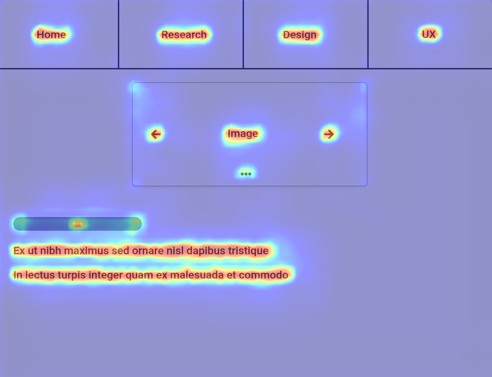
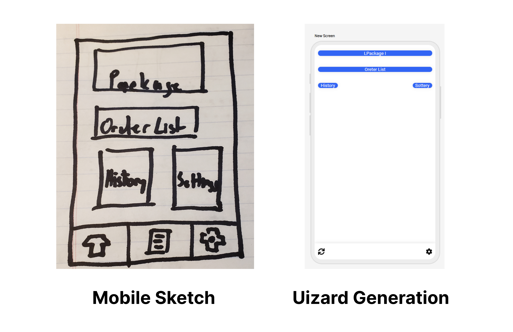
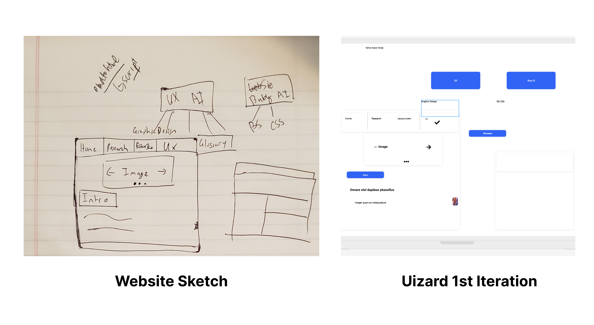
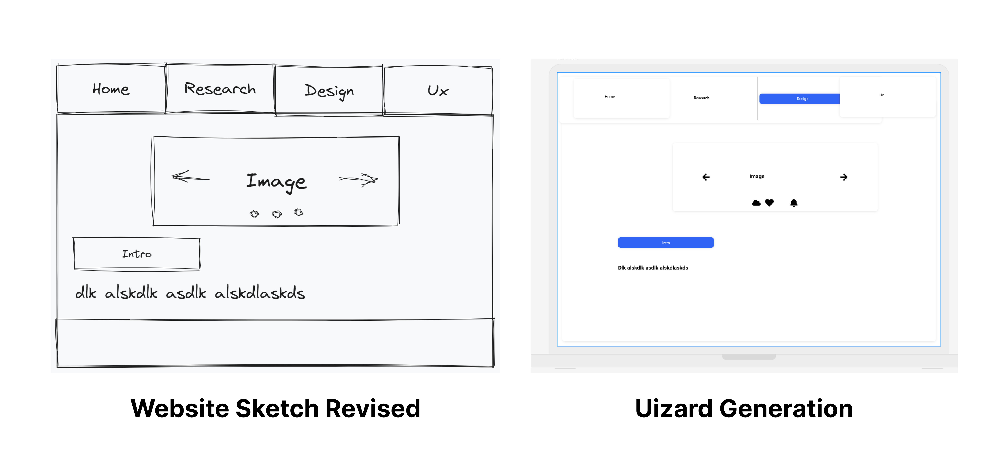
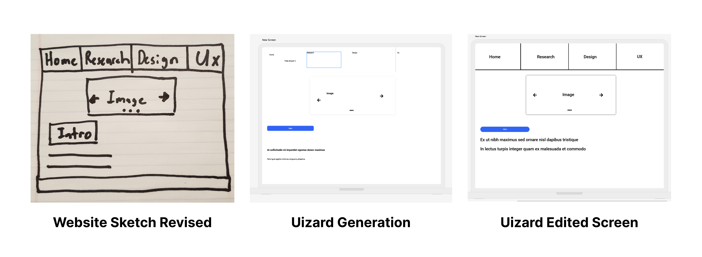

AI tools such as Uizard were used to convert physical sketches into digital wireframes. The software scanned the image taken of the sketch and produced a screen with the specified dimensions or screen format (mobile/desktop). Screens created can only be exported in png, jpeg and pdf formats, limiting their ability to be edited in prototyping software such as Figma.
However, there were various issues with the size of the assets and with the text generated not being the same as the reference image or real english words. Visual assets were placed in the correct areas but needed to be resized afterward.
Further tests showed that the sketch needs clearly defined sections with large font sizes for the best translation to a digital wireframe. A black highlighter was used to sketch the revised drawing which produced a more accurate result. Only minor edits needed to be made such as text resizing and placement to create the wireframe.
Overall, Uizard can save time in creating digital wireframes for users.
Additional Features
Uizard performed better when generating screens based on preset prompts or categories. Filter parameters include the device type, design styles, dimensions, and the prompt itself.
Uizard is also capable of generating heatmaps that predict areas of the design that users are likely to focus on. To generate heatmaps, the analyzed design is compared with data from other popular websites. Redder colored areas mean the higher level of focus for a user, while blue areas means lower levels of focus. Heatmaps generated prioritized headers and large description text as areas that drew users attention.
Generated Design From Mobile Sketch:
On the left is the sketch and the right is the generated image by Uizard. Uizard was able to determine most of the UI elements and their position but did not draw each content block the correct size. Additionally, Uizard did not draw the third icon found at the bottom of the mobile sketch.
Unedited Generated Design From the Website Sketch:
This is the first sketch that was done for the website. On the right is the Uizard generation of the sketch. Content is placed correctly. Borders, text, and text alignment are incorrectly done.
Unedited Generated Design From the Revised Website Sketch:
This is the second sketch that was done for the website that uses more clearly defined lines. On the right is the Uizard generation of the sketch. Content is placed correctly. Borders are not clearly defined, with text placed in the incorrect position.
Refined Version of the Generated Design From the Website Sketch:
This is the second sketch that was done for the website.
A black highlighter was used to produce thick defined lines that are easier to scan. On the right is the Uizard generation of the sketch. Content and borders are placed correctly. Some text and the text alignment are incorrectly done.
The right most image is the edited version of the generated image that closely matches the original sketch.
